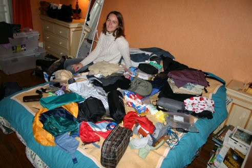

Que mettre dans le sac à dos pour un voyage d’un an autour du monde ?? C’est une question délicate sur laquelle nous nous sommes un peu arrachés les cheveux...
On bannit le sèche cheveux, les palmes, masque et tuba, les 10 tenues différentes que l’on compte mettre selon le temps, les sorties ou l’assortiment avec les chaussures !! Bref, on essaie de ne pas faire comme d’habitude et de ne pas transporter 2 valises pleines à craquer pour 15 jours de vacances !! Ouille, c’est dur !!!
 Règle numéro 1 : Ne pas remplir le sac à dos à ras bord... Laisser de la place pour les éventuelles bricoles à acheter sur place.
Règle numéro 1 : Ne pas remplir le sac à dos à ras bord... Laisser de la place pour les éventuelles bricoles à acheter sur place.
 Règle numéro 2 : Faire en sorte que le sac à dos ne pèse pas 20kg !! 10 à 12 kg paraît plus raisonnable...
Règle numéro 2 : Faire en sorte que le sac à dos ne pèse pas 20kg !! 10 à 12 kg paraît plus raisonnable...
 Règle numéro 3 : Ne prendre que ce qui est indispensable (ça paraît évident quand on le dit comme ça, mais je peux vous assurer que la définition "du nécessaire" n’est pas la même pour tout le monde !).
Règle numéro 3 : Ne prendre que ce qui est indispensable (ça paraît évident quand on le dit comme ça, mais je peux vous assurer que la définition "du nécessaire" n’est pas la même pour tout le monde !).
 Règle numéro 4 : Protéger le matériel le plus possible dans des sacs en plastique ou autre pour prévenir les éventuelles fuites.
Règle numéro 4 : Protéger le matériel le plus possible dans des sacs en plastique ou autre pour prévenir les éventuelles fuites.
 Règle numéro 5 : Compartimenter le sac à dos afin de retrouver plus facilement ses affaires.
Règle numéro 5 : Compartimenter le sac à dos afin de retrouver plus facilement ses affaires.
Voilà déjà, ça permet de débroussailler un peu le terrain. Après, nous avons choisi d’acheter de la qualité pour notre matériel quitte à dépenser plus... Nous n’avons donc pas lésiné sur les vêtements dits de haut de gamme, afin d’éviter que notre pantalon ne nous lâche dès le premier mois du voyage !
Les sacs
Le sac à dos va faire office de maison pendant un an... Le tout, c’est de ne pas se tromper au moment de l’acheter ! Nous avons choisi de prendre notre maison portative chez Decathlon étant donné que les prix étaient plus raisonnables qu’au Vieux Campeur.
En plus, nous sommes tombés sur un vieux baroudeur de plus de 70 ans qui se baladait dans le rayon des sacs à dos, histoire de se remémorer le bon vieux temps certainement, et qui nous a extrêmement bien conseillés dans le choix du sac qui nous convenait le mieux ! Il s’y connaissait plus que le vendeur ! Bref, nous sommes ressortis du magasin avec chacun notre sac sur le dos et contents d’avoir rencontré ce vieux bonhomme !
| Fournisseur | Article | Michaël | Eve-Laure | Commun | Utile après coup ? |
| Décathlon | Sac à dos Frontier Lowe Alpine 65+15 | 139 | Oui | ||
| Décathlon | Sac à dos Sundance Deuter 55+10 | 109,99 | Oui | ||
| Décathlon | Sac à dos Diosaz 20 | Offert | 14,9 | Oui | |
| Sacs Poubelle pour protéger l’intérieur du sac | Non | ||||
| Vieux Campeur | 7 x Sacansac pour compartimenter l’intérieur de sac à dos | 84.4 | Oui | ||
| Bassine en plastique pliable pour faire la lessive | l’a déjà | Oh que oui ! | |||
| Vieux Campeur | Trousse de toilette | 6 | Oui | ||
| Vieux Campeur | Trousse pour médicaments | 24 | Oui | ||
| Vieux Campeur | Trousse de secours | 13 | Pas prise finalement | ||
| Vieux Campeur | Sacs compressibles | 20 | Pas pris finalement | ||
| Vieux Campeur | Sac pour protéger papier | 12,6 | Oh que oui ! Nos sacs ont plus d’une fois pris l’eau ! | ||
| Maroquinerie | Porte Monnaie | 22 | Oui | ||
| Sacs supermarché | l’a déjà | Oui | |||
| Sacs étanches type Ziploc | l’a déjà | Oui | |||
| Décathlon | Poncho Sac à dos | 9,99 | Oui | ||
| Décathlon | Sur Sac à dos pour l’aéroport et les bus | 19,99 | 19,99 | Oh que oui ! Sans ça, notre sac à dos serait à jeter... | |
| TOTAL | 168,98€ | 172,88€ | 154€ |
Les vêtements
Il vaut mieux prendre en priorité des vêtements résistants et qui sèchent vite du type Coolmax, Carline ou Polartec. Il vaut mieux éviter les vêtements en coton, sauf pour les sous-vêtements.
Les vêtements chez Décathlon sont quand même moins chers qu’au Vieux Campeur pour une qualité assez équivalente, ceci dit, il y a moins de choix !
| Fournisseur | Article | Michaël | Eve-Laure | Utile après coup ? |
| Décathlon | Poncho Pelerine Quechua | 17,99 | 17,99 | Pas pris finalement |
| Chèche | l’a déjà | 6,9 | Oui | |
| Gant + écharpe | l’a déjà | l’a déjà | Oh que oui ! | |
| Go Sport | Bonnet | l’a déjà | 5,9 | Oui |
| Paréo | l’a déjà | Oui | ||
| Vieux Campeur | Veste Gore Tex | 126,65 | 160,3 | Oh que oui ! |
| Vieux Campeur | Micro-polaire | 37,4 | 29,75 | Oui |
| Go Sport + Andaska | 5 x Chaussette Coolmax | 33,97 | 47,4 | Oui |
| Andaska | Chemise manche longue | 47 | Oui | |
| Décathlon + Doursoux | Polaire épaisse | 20 | 15 | Oui |
| Décathlon | Caleçon long | 5,99 | 5,99 | Oh que oui ! Surtout pendant les nuits glaciales |
| Décathlon | Pantalon imperméable | 12 | Offert | Utilisé juste 2 fois |
| Décathlon | Tee shirt manches longues | 24,99 | 51,24 | Oui |
| Décathlon | Tee shirt manches courtes | 23,8 | 22,99 | Oui |
| Décathlon | Pantalon convertible en short | 18 | 32,9 | Oui |
| Doursoux | Pantalon | 45 | l’a déjà | Oui |
| Décathlon | Maillot de bain | 16,99 | l’a déjà | Oui |
| Sous-vêtements | l’a déjà | l’a déjà | Oui | |
| Vieux Campeur | Short | 32,9 | Non | |
| Vieux Campeur | Chapeau | 34 | Offert | Oh que oui ! |
| TOTAL | 416,78€ | 476,26€ |
Les chaussures
Nous n’avons pas lésiné sur les chaussures de randonnée. Et nous pensons avoir eu raison... depuis que nous les avons achetées, nous les portons tous les jours afin de pouvoir nous y habituer et nous nous sentons vraiment bien dedans !
| Fournisseur | Article | Michaël | Eve-Laure | Utile après coup ? |
| Décathlon | Chaussures rando Renegade Femme | 76 | Oui, mais elles ont rendu l’âme 1 mois avant le retour | |
| Vieux Campeur | Sandales de rando | 59 | 54,5 | Oui, mais pas la peine de payer si cher, celles de Michaël n’ont pas tenu 2 mois ! |
| Go Sport | Chaussures légères de marche | 30 | Pas vraiment | |
| Décathlon | Chaussures rando Starlite Homme | 94,99 | Oui | |
| Désodorisant pour chaussures | l’a déjà | Pas pris finalement | ||
| TOTAL | 153,99€ | 160,5€ |
Pour la nuit
Nous ne prenons pas de tente parce que nous avons l’intention de dormir dans des hôtels ou dans des chambres chez l’habitant le plus possible.
Si nous décidons de faire un trek, nous louerons des tentes sur place ! Nous prenons tout de même un petit sac de couchage pour les nuits fraiches dans les hôtels non chauffés...
| Fournisseur | Article | Michaël | Eve-Laure | Commun | Utile après coup ? |
| Décathlon | Moustiquaire Totem 2 places imprégnée | 44,99 | Oui, en Asie essentiellement | ||
| Décathlon | Oreiller Compress | 6,99 | 6,99 | Oui, pour les bus | |
| Go Sport | Sac de couchage | Offert | 90 | Oh que oui ! | |
| Décathlon | Sac à viande en soie | 29,99 | 29,99 | Oui, surtout en Inde | |
| Couverture de survie | Offert | Offert | Non, mais mieux vaut la prendre | ||
| Cache lumière pour les yeux | Offert | Offert | Oui | ||
| TOTAL | 126,98€ | 126,98€ | 44,99€ |
Pour manger
| Fournisseur | Article | Michaël | Eve-Laure | Utile après coup ? |
| Décathlon | Gourde Platypus 1L | 6,99 | 6,99 | Oui |
| Piquées dans des restau chinois | Baguettes | l’a déjà | l’a déjà | Non |
| Décathlon | 3 couverts inox | 2,95 | 2,95 | Non |
| TOTAL | 9,94€ | 9,94€ |
Pour l’hygiène
| Fournisseur | Article | Michaël | Eve-Laure | Commun | Utile après coup ? |
| Décathlon | Serviette Pack Towel Large absorbant 99% humidité | 14,99 | 14,99 | Oui | |
| Vieux Campeur | Gant corporel | 4,5 | 4,5 | Oui | |
| Monoprix | Coton | 5,69 | Oui | ||
| 2 x Papier toilette | 3,9 | Oui | |||
| Savon de Marseille | N’importe quel savon fait l’affaire | ||||
| Flacon de savon utilisable sans eau | 8,9 | Non | |||
| Vieux Campeur | Container de savon | 3,9 | 3,9 | Oui | |
| Dentifrice et son container | Oui | ||||
| Monoprix | Kleenex | Oui | |||
| Brosse à cheveux | Oui | ||||
| Peigne | l’a déjà | Oui | |||
| Monoprix | 40 lingettes Hygiène intime | 8,24 | Non | ||
| Vieux Campeur | Miroir incassable | 3,8 | Non, on n’y voit rien dans ce genre de miroir ! | ||
| Vieux Campeur | Brosse à ongle | 3,9 | Oui | ||
| Monoprix | Lames de rasoir | 6,05 | Oui | ||
| Monoprix | Déodorant | 3,95 | 3,96 | Oui | |
| Go Sport | 2 x Bâtonnets de protection pour les lèvres | 4,59 | Oui | ||
| Monoprix | Tampons + Serviettes hygiéniques | 5,2 | Oui | ||
| Coupe-ongle | l’a déjà | Oui | |||
| TOTAL | 33,39€ | 46,48€ | 31,54€ |
La pharmacie
Pour avoir le contenu exact de tous les médicaments achetés, nous vous renvoyons à la rubrique Santé.
Les plaisirs
| Fournisseur | Article | Michaël | Eve-Laure | Commun | Utile après coup ? |
| Fnac | Appareil photo numérique Canon EOS 300D | 1128 | Oh que oui ! | ||
| Fnac | Filtre polarisant circulaire pour appareil numérique | 50 | Oh que oui ! Ca permet d’avoir des ciels bleus uniques ! | ||
| Azimut.com | Disque dur portable Archos Gmini 400 | Offert | Oui, sauf qu’il n’est pas fiable à 100%, le mieux est de graver les photos sur CD souvent | ||
| Vieux Campeur | Profondimètre | Offert | Oui | ||
| Vieux Campeur | Prise universelle | 29,9 | Oui, surtout pour l’Australie et la Nouvelle-Zélande | ||
| Appareil photo Olympus argentique | l’a déjà | Oui | |||
| Pile de rechange pour appareil photo + pellicules | 9 | Oui, mais beaucoup de problèmes pour faire développer les pellicules ! | |||
| Jeu de cartes normal + UNO | Un peu | ||||
| Carnet de route | Offert | Oh que oui ! | |||
| Livres | Oui, mais pas la peine de se charger, on trouve partout des livres en français | ||||
| Virgin | Guides | 323.49 | Oui, on s’est fait envoyer certains guides en poste restante | ||
| TOTAL | 1241,9€ | 43€ | 323,49€ |
L’utile
| Fournisseur | Article | Michaël | Eve-Laure | Commun | Utile après coup ? |
| Réveil | l’a déjà | Oui | |||
| BHV | Cadenas pour bagages | 7,3 | 7,3 | Oui | |
| BHV | Cadenas pour chambre | 8,61 | Oui, surtout en Asie | ||
| BHV | Cable lock pour bagages | 4,99 | 4,99 | Une fois pour accrocher nos vélos | |
| Vieux Campeur | 3 x Bougies | 5,5 | Non | ||
| Décathlon | Lampe frontale Tikka | 34,9 | Oui | ||
| Décathlon | Lampe Maglite | 17,99 | Oui | ||
| Lunettes de soleil | l’a déjà | l’a déjà | Oh que oui ! | ||
| Ciseau | l’a déjà | Oui | |||
| Décathlon | Balle de squatch qui sert à boucher les éviers | 2.29 | Non, ça n’a jamais marché ! | ||
| Décathlon | Couteau suisse 6 fonctions | l’a déjà | 11,99 | Oui | |
| Dico anglais-français | l’a déjà | Oui | |||
| BHV | Dico espagnol - français | 3,9 | Oui | ||
| Décathlon | Montre avec alarme | Offert | Oui | ||
| 10 Stylos à donner | 5 | Non, il ne faut pas encourager la mendicité | |||
| Vieux campeur | Porte Billets en coton pour cacher argent, passeport et papiers importants | 19,1 | 19,1 | Oh que oui, ça nous a sauvé la vie plus d’une fois ! | |
| Pile de rechange pour lampes | Oui | ||||
| Vieux campeur | Trousse de couture | 3,8 | Oui | ||
| Castorama | Rouleau adhésif | 4,95 | Oui | ||
| Vis pour moustiquaire | Non, mais prendre de la ficelle rigide | ||||
| Castorama | Crochets ventouses pour moustiquaire | 3,44 | Non, ça n’a jamais tenu | ||
| Corde à linge | l’a déjà | Oui, utile aussi pour accrocher la moustiquaire | |||
| Corde de dépannage | Pas prise finalement | ||||
| Vieux campeur | Boussole | 12 | Non, mais on ne sait jamais | ||
| Briquets | 2 | Oui | |||
| Allumettes | Oui | ||||
| Vieux campeur | 2 x Chaufferettes | 3,4 | Non | ||
| Epingles à nourrice | 1 | Non | |||
| Pinces à linge | l’a déjà | Oui | |||
| Castorama | Elastiques pour fermer les sacs ou pantalons | 2.38 | Pas vraiment | ||
| Trombones | 2 | Non | |||
| Carnet de note | Oui | ||||
| post-it | 2 | Non | |||
| Calculatrice | l’a déjà | Oui | |||
| TOTAL | 49,38€ | 78,28€ | 62,27€ |
Et voilà, nous sommes parés ! Il ne reste plus qu’à tout faire rentrer dans le sac à dos maintenant ! Ce n’est pas gagné... 
Bilan du retour
Malgré ce que je pensais au début de notre voyage, nous n’avons rien oublié et rien ne nous a manqué. Nous avions plutôt trop de choses au contraire ! Notre sac était clairement trop lourd (14 kg pour Eve-Laure et 15 kg pour Michaël, sans compter les 5 kg chacun du petit sac à dos), mais finalement, nous ne l’avons pas porté beaucoup ! Aussitôt sortis du bus ou du train, nous prenions des moyens de transport locaux (bus, taxi, mobylette, tuk-tuk) pour nous emmener à notre hôtel où nous posions nos gros sacs... Du coup, nous ne l’avons jamais porté sur plus de 1km ! Ceci dit, nous l’avons joué plutôt routards feignants quelques fois !
Si je devais repartir, je rognerais beaucoup sur les médicaments. Nous en avions beaucoup trop et mine de rien, ça pèse lourd ! Il y a des pharmacies partout et nous avons toujours trouvé ce dont nous avions besoin.